After preparing this topic, you should be able to:
A farmer has 1200 m of fencing and wants to fence off a rectangular field that borders a straight river. He needs no fence along the river. What are the dimensions of the field that has the largest area?
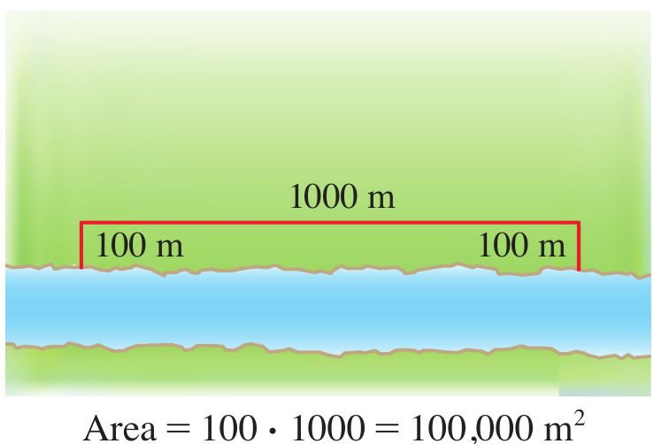
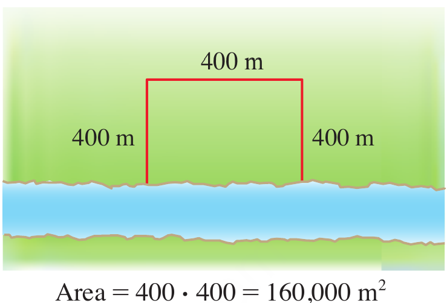
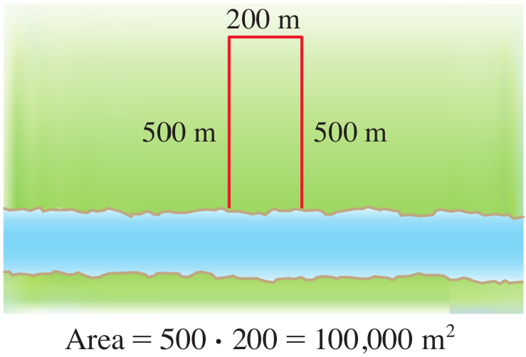
Figure 1. Three possible rectangular fields beside a river, illustrating how different dimensions produce different areas.
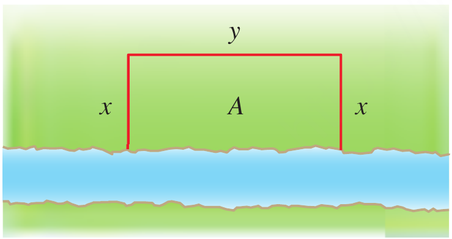
Figure 2. A general rectangular field beside a river, with depth x and width y.
Let x be the depth and y be the width of the field. The area to be maximized is A=xy. Since the river forms one side of the rectangle, fencing is needed for only two depths and one width. Therefore, the constraint is
2x+y=1200
Solving for y gives y=1200-2x. Substituting this into the area formula gives the objective function
A(x)=x(1200-2x)=1200x-2x^2
The depth cannot be negative, and it cannot exceed 600 m. Thus, the domain is 0\leq x\leq600. Differentiating and setting the derivative equal to zero gives
A'(x)=1200-4x=0
Hence, the only critical number is x=300. We compare the area at the critical number and at the endpoints.
A(0)=0 \qquad A(300)=180000 \qquad A(600)=0
The maximum area is 180000\text{ m}^2, attained when x=300 m. The corresponding width is y=1200-2(300)=600 m.
Therefore, the field should be 300 m deep and 600 m wide.
A cylindrical can is to be made to hold 1 L of oil. Find the dimensions that will minimize the cost of the metal to manufacture the can.
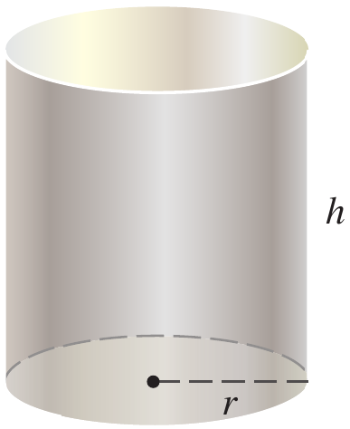
Figure 3. A cylinder with radius r and height h.
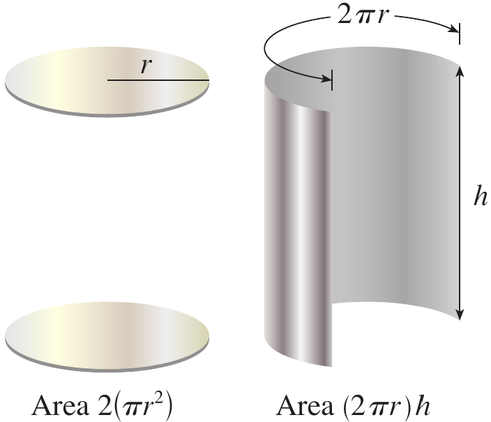
Figure 4. The cylindrical can’s surface separated into two circular ends and a rectangular side.
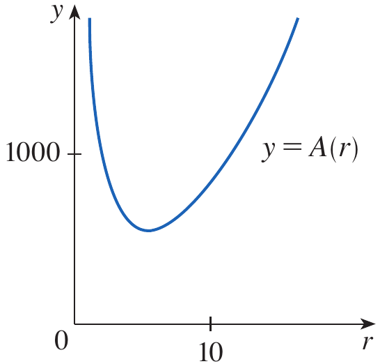
Figure 5. The graph of the surface-area function, showing its minimum.
We assume that the cost of the metal is proportional to the total surface area. Let r and h be the radius and height in centimeters. The surface area is
A=2\pi r^2+2\pi rh
Since 1 L equals 1000\text{ cm}^3, the volume constraint is
\pi r^2h=1000
Solving for h gives h=1000/(\pi r^2). Substituting into the surface-area formula gives
A(r)=2\pi r^2+\frac{2000}{r}
The domain is r>0. Differentiating gives
A'(r)=4\pi r-\frac{2000}{r^2}
Setting A'(r)=0 gives 4\pi r^3=2000, so r^3=500/\pi and
r=\sqrt[3]{\frac{500}{\pi}}
For values of r below this critical number, A'(r)<0; for values above it, A'(r)>0. Therefore, the surface area decreases before the critical number and increases afterward, giving an absolute minimum. Substituting the critical radius into the volume constraint gives
h=\frac{1000}{\pi r^2}=2r
Thus, the can uses the least metal when its height equals its diameter, with r=\sqrt[3]{500/\pi} cm and h=2\sqrt[3]{500/\pi} cm.
Suppose c is a critical number of a continuous function f defined on an interval.
Find the point on the parabola y^2=2x that is closest to the point (1,4).
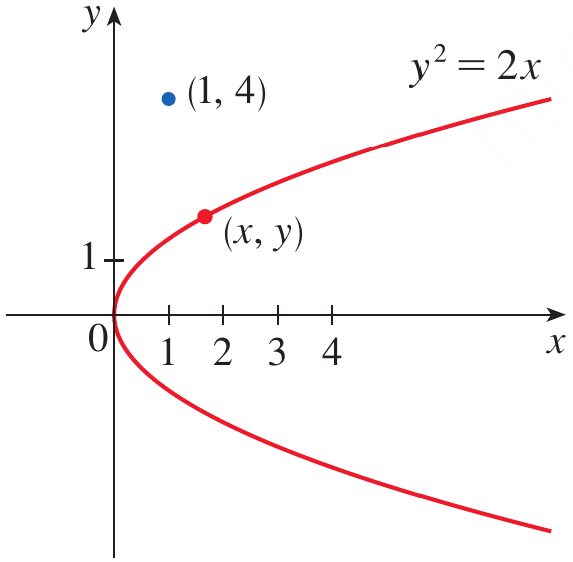
Figure 6. The parabola y^2=2x, the fixed point (1,4), and a general point (x,y) on the parabola.
Let (x,y) be a point on the parabola. Its distance from (1,4) is
d=\sqrt{(x-1)^2+(y-4)^2}
Since y^2=2x, we have x=y^2/2. It is easier to minimize the square of the distance because the square-root function is increasing. Define
F(y)=d^2=\left(\frac{y^2}{2}-1\right)^2+(y-4)^2
Differentiating and simplifying gives
F'(y)=y^3-8
Setting F'(y)=0 gives y^3=8, so y=2. The derivative is negative when y<2 and positive when y>2, so F has an absolute minimum at y=2. The corresponding x-coordinate is x=y^2/2=2. Therefore, the closest point is (2,2). The distance is \sqrt{(2-1)^2+(2-4)^2}=\sqrt5.
A woman launches her boat from point A on a bank of a straight river, 3 km wide, and wants to reach point B, 8 km downstream on the opposite bank, as quickly as possible. She could row her boat directly across the river to point C and then run to B, or she could row directly to B, or she could row to some point D between C and B and then run to B. If she can row 6 km/h and run 8 km/h, where should she land to reach B as soon as possible? Assume that the speed of the water is negligible compared with the speed at which she rows.
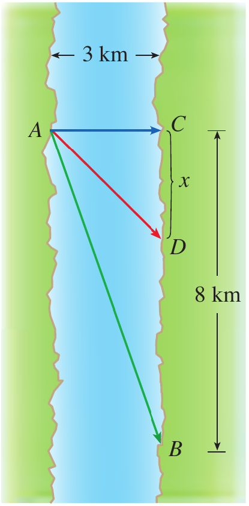
Figure 7. A river 3 km wide showing the starting point A, the point C directly across the river, the destination B 8 km downstream, and a possible landing point D.
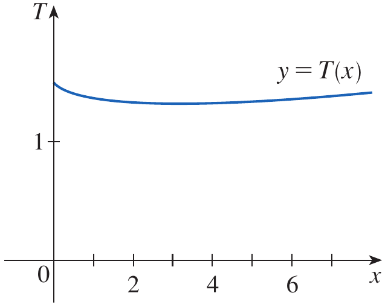
Figure 8. The graph of total travel time T(x) over the interval [0,8].
Let x be the distance from C to D, measured downstream. The running distance is 8-x km. By the Pythagorean Theorem, the rowing distance is \sqrt{x^2+9} km. Since time equals distance divided by speed, the total travel time is
T(x)=\frac{\sqrt{x^2+9}}{6}+\frac{8-x}{8}
The domain is 0\leq x\leq8. Differentiating gives
T'(x)=\frac{x}{6\sqrt{x^2+9}}-\frac18
Setting T'(x)=0 and solving gives
\frac{x}{6\sqrt{x^2+9}}=\frac18
4x=3\sqrt{x^2+9}
16x^2=9x^2+81
x=\frac{9}{\sqrt7}
To find the absolute minimum, compare the critical value with the endpoint values.
T(0)=1.5 \qquad T\left(\frac{9}{\sqrt7}\right)\approx1.33 \qquad T(8)\approx1.42
The smallest time occurs at x=9/\sqrt7\approx3.4 km.
Therefore, she should land approximately 3.4 km downstream from point C and run the remaining distance to B.
Find the area of the largest rectangle that can be inscribed in a semicircle of radius r.
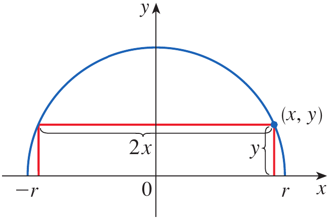
Figure 9. A rectangle inscribed in the upper semicircle of radius r, with upper-right vertex (x,y).
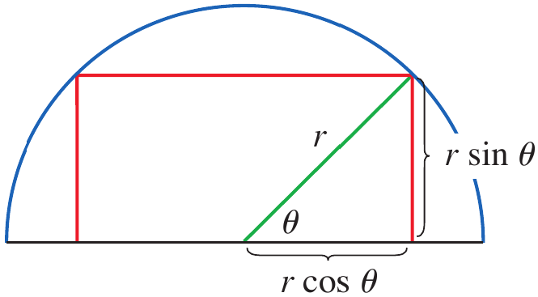
Figure 10. The radius of the semicircle and the angle \theta used to express the rectangle’s dimensions.
Solution 1
Take the semicircle to be the upper half of x^2+y^2=r^2. If (x,y) is the upper-right vertex of the rectangle, its width is 2x and its height is y. Thus, its area is A=2xy. Since x^2+y^2=r^2, we have y=\sqrt{r^2-x^2}. Therefore,
A(x)=2x\sqrt{r^2-x^2}
The domain is 0\leq x\leq r. Differentiating gives
A'(x)=\frac{2(r^2-2x^2)}{\sqrt{r^2-x^2}}
The interior critical number satisfies r^2-2x^2=0, so x=r/\sqrt2. The area is zero at both endpoints, so this critical number gives the maximum. Substituting x=r/\sqrt2 and y=r/\sqrt2 gives
A_{\max}=2\left(\frac{r}{\sqrt2}\right)\left(\frac{r}{\sqrt2}\right)=r^2
Solution 2
Let \theta be the angle shown in Figure 10. The rectangle has width 2r\cos\theta and height r\sin\theta. Therefore,
A(\theta)=(2r\cos\theta)(r\sin\theta)=r^2\sin(2\theta)
The maximum value of \sin(2\theta) is 1, attained when 2\theta=\pi/2. Hence \theta=\pi/4 and the maximum area is r^2.
A rectangle borders a river and requires fencing on only three sides. If 2x+y=100, write its area as a function of x.
The area is A=xy. Since y=100-2x, the objective function is
A(x)=x(100-2x)=100x-2x^2
Why is it useful to minimize the square of a distance rather than the distance itself?
For nonnegative distances, squaring preserves their order. Therefore, the distance and its square attain their minimum at the same point, but the squared distance often avoids a square root and is easier to differentiate.
R(x)=xp(x)
P(x)=R(x)-C(x)
A store has been selling 200 TV monitors a week at $350 each. A market survey indicates that for each $10 rebate offered to buyers, the number of monitors sold will increase by 20 a week. Find the demand function and the revenue function. How large a rebate should the store offer to maximize revenue?
Let x be the number of monitors sold per week. The price is $350 when x=200. For every increase of 20 monitors sold, the price decreases by 10, so the price decreases by 10/20=0.50 dollars per additional monitor. A linear demand function therefore has slope -0.5. Using the point (200,350) gives
p(x)=350-0.5(x-200)=450-0.5x
Revenue is quantity multiplied by price, so
R(x)=xp(x)=450x-0.5x^2
Differentiating gives
R'(x)=450-x
Setting the derivative equal to zero gives x=450. Since the revenue function is a downward-opening quadratic, this critical number gives the maximum revenue in the model. The price at this sales level is
p(450)=450-0.5(450)=225
The store currently charges $350, so the required rebate is $350-$225=$125.
Therefore, the store should offer a $125 rebate to maximize revenue under the given model.
A company sells x units at a price of p(x)=80-2x dollars per unit. Write its revenue function.
Revenue equals quantity multiplied by price.
R(x)=xp(x)=80x-2x^2
If R(x) is revenue and C(x) is cost, how is profit defined, and what does P'(x) represent?
Profit is revenue minus cost, so P(x)=R(x)-C(x). Its derivative P'(x) is the marginal profit, or the rate of change of profit with respect to the number of units produced and sold.
A mechatronics team is programming a small delivery robot to move equipment across a workshop. The robot can travel along a straight aisle at 2 m/s and must then travel across a side corridor at 1.5 m/s. The corridor is 6 m across, and the destination is 10 m down the aisle from the point directly opposite the robot’s starting position. The robot can travel diagonally across the corridor to a point x metres down the aisle, then travel along the aisle to the destination. Determine the landing point that minimizes the total travel time.
Let x be the distance down the aisle to the point where the robot crosses the corridor. The corridor distance is \sqrt{x^2+36} m, and the remaining aisle distance is 10-x m. The total travel time is
T(x)=\frac{\sqrt{x^2+36}}{1.5}+\frac{10-x}{2}
The feasible domain is 0\leq x\leq10. Differentiating gives
T'(x)=\frac{x}{1.5\sqrt{x^2+36}}-\frac12
Setting T'(x)=0 gives
\frac{x}{1.5\sqrt{x^2+36}}=\frac12
2x=1.5\sqrt{x^2+36}
Squaring both sides gives 4x^2=2.25x^2+81, so 1.75x^2=81. Hence,
x=\sqrt{\frac{324}{7}}\approx6.80
The critical value lies in the feasible interval. Comparing the total time there with the endpoint values confirms that it gives the least time.
T(0)=\frac{6}{1.5}+\frac{10}{2}=9\text{ s}
T(10)=\frac{\sqrt{136}}{1.5}\approx7.77\text{ s}
T(6.80)\approx\frac{\sqrt{82.24}}{1.5}+\frac{3.20}{2}\approx7.65\text{ s}
Therefore, the robot should cross the corridor at a point approximately 6.80 m down the aisle from the point directly opposite its starting position. The minimum travel time is approximately 7.65 seconds under this simplified model.
Solve the odd number exercises from exercise 1 to 88.
Exercises help transform theoretical concepts into practical understanding.
Mathematics is learned by doing and solving exercises will train you to analyze problems, select appropriate methods, and construct logical solutions.
Attempting problems sometimes leads to mistakes which provide opportunities for learning and improvement.
Regular practice increases speed, accuracy, and confidence.
Exercises are given in the Exercises file and you are expected to solve them on your own.